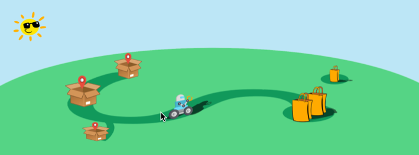
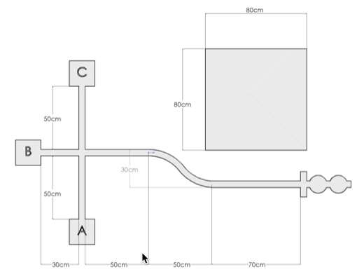

Autonomous Delivery Robot Challenge¶
Introduction¶
To help people in need in the current pandemic, you and your colleagues have decided to build an autonomous delivery robot. Your robot will pick up food and other supplies and deliver them to residences with minimal contact, all to help fight the spread of the coronavirus.
Of course, a full-sized version will have to wait until you get millions of dollars in investments for your robotics company, but that doesn’t mean you can’t have fun dreaming with a scale model here.
Your robot will have an arm for lifting and carrying “bags” of goods and sensors to help it navigate a simple network of “streets.” Of course, not every house is the same, so placing the items on the front stoop will require lifting goods to different heights. Complicating things even more, not everything to be delivered is always put in the right spot for easy collection and sometimes road construction might block your path. But you’ll still need to make it work!
The world is counting on you! Can you make it happen?
Objectives¶
The final project is a chance for you and your teammates to demonstrate that you can apply concepts and strategies from the course to a specific challenge. You will apply theoretical knowledge to the design of your system and use focused testing to improve the performance. The project will culminate in a demonstration where you will prove your robot’s performance. To help us understand more about your system and your process, you will also produce a report describing the system development and an assessment of how well it met your goals. The successful team will design, build, and demonstrate a robot that can accomplish a prescribed set of tasks. To be successful, you will need to:
Identify key performance criteria and develop a strategy for meeting your team’s objectives,
Identify key factors that affect performance and use analysis and testing to specify them,
Develop and apply a testing strategy to ensure performance,
Evaluate the system performance, and
Describe the system and your design process.
Challenge¶
Your challenge is to create a robot that can pick up bags of supplies from known and unknown locations and deliver them to specified delivery points. The challenge is constructed such that the tasks have a range of difficulty. For example, carrying heavier bags or delivering them faster will earn more points. Since you will have to perform multiple runs, reliability will be essential.
Course¶
The course will consist of a strip of tape (to simulate roads) with a designated place to pick up bags and three drop zones, each with a different height. Most bags will be placed at the end of the main road, though some will be placed in a “free range” zone. Figure 1 shows a typical arena, though we realize that there will be some variation in each course.
Bags¶
You will be expected to build your own delivery bags, for example from paper or card stock and paper clips. This video shows a soup can as a bag. You may fill the bags with material to add weight and simulate more goods – again, the more weight, the more points. The bags can be circular or square but no larger than a typical soup can, with the exception of the bail, which may be up to an additional 7 cm above the container section. You may make your bags as small as you want, but all of your bags must be of similar size and construction, though the weight of each bag may vary. You should have at least two bags ready for the demo. You may “recycle” them as the demo progresses.
Collection¶
Most of the bags will be placed on the line at the end of the main road. You may place a piece of tape near the pickup zone to indicate where it starts, but the bags will be placed at different distances from the tape.
Figure 1: Diagram of the arena. Individual arenas will vary. Scale will depend on access to the Robotics Lab towards the end of the term.
To earn points for collecting the free-range bag, you must demonstrate that it’s position can be arbitrary within the free-range zone (with the exception that you may face the bail in whatever position you deem most favorable).
Delivery zones¶
Each delivery zone or platform may be no larger than 10 cm in any horizontal dimension. One delivery zone will be on the ground, marked with tape. The platforms for the other two delivery zones will be 4 cm and 8 cm above the ground. You can make them out of cardboard or any other material. To score points, each container must be placed in a delivery zone and left there (upright) long enough to prove that it is stable.
Operation¶
You will start with your Romi on the main road and a bag in the pickup zone. On command (a button press on an IR remote), your Romi will drive to the pickup zone, pick up a bag, and deliver it to the specified address, which will be determined by the button press (e.g., ’1’ indicates a delivery to the ground level zone, etc.). Your Romi will then return to the starting point, stop, and wait for the next command. After each delivery, you will place another bag in the pickup zone and repeat the process, pressing the button to indicate another delivery. You may recycle the bags as much as you wish. At random points in the demo (up to two times), your instructor will place a road construction sign on the main road for 30 seconds, and you will not receive credit for any delivery during which your vehicle hits the sign. You may use any of the sensors that you’ve explored in this class to accomplish the challenge. Obviously, line following will be an important behavior, but collecting the free range bags autonomously will require some creativity on your part.
Scoring¶
In your run, your team should deliver as much weight as possible, plus and including the “free range” bags. Points will be allocated as follows:
You will receive 1 point for every 40 g of goods you deliver, up to 1000 g (25 points max). However, you may only get 10 points max (corresponding to 400 g) for each delivery address; i.e., you must deliver to all three addresses to receive the maximum points.
No points will be received for a delivery where the Romi hits the road construction sign.
To encourage you to get all of your team’s Romæ working, you will receive a bonus for each extra Romi you use in the demo. You may switch vehicles after a Romi returns to the start point after any delivery. The replacement Romi must be put in the same spot.
You will receive 5 points for each free-range bag (10 points max). You will lose 2 points for each time you have to touch your Romi (e.g., to put it back on the line). You will lose 1 point for each time you press a button on your IR remote, other than to specify the delivery zone at the start of each delivery. That is, you may send IR remote commands to your Romi while it’s driving, but it will quickly become expensive.